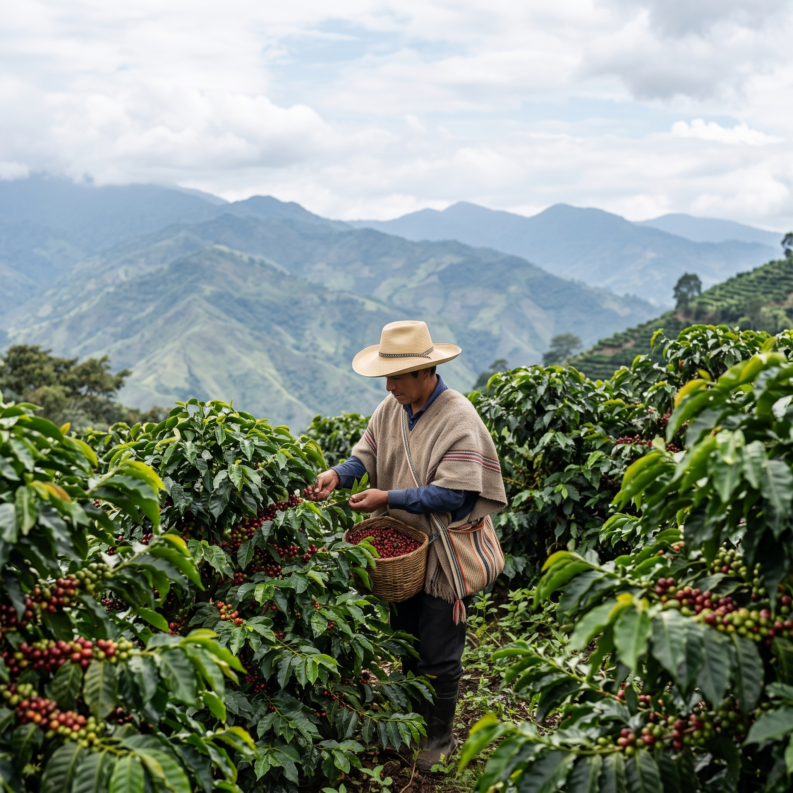

Impact Overview
SHF Agriculture Impact Dashboard
Explore agriculture programme data across education, livelihoods & leadership, and systems development filtered by country, year, and sub-level.

Data Dashboard
Girls' Education, Livelihoods & Systems
KPI-level programme data across three impact levels, filterable by country and year.
Dynamic Data
District & School Level Data
Drill down to district and school level with multi-select country, district, and school filters.
Data Slicer
Custom Slices & Comparisons
Compare data across gender, number ranges, and other dimensions using flexible slicer controls.
Girls — Bursary Annual
—
KPI 1.1 · Girls Total
CAMA & Community Support
—
KPI 1.2 · Girls Total
Social & Learning Support
—
KPI 1.3 · Annual
Learner Guides Active
—
KPI 1.9 · Annual Total
Total Girls Supported
—
KPI 1.13 · Annual
Total Boys Supported
—
KPI 1.14 · Annual
Children Supported in School with Education Bursaries
Active Learner Guides
KPI 1.9
Number of Girls by School Level (Primary vs Secondary)
KPI 1.1
Bursary Support — Annual to Cumulative
All Periods
Dropout Rate — Pregnancy / Early Marriage
KPI 1.5
Social & Learning Support Recipients
Number of Clients by Form / Dropout Rate
P9
CAMA Members Cumulative
312,747
KPI 2.1
Jobs Created (Annual)
34,558
KPI 2.9
Female Entrepreneurs
12,344
KPI 2.6 · Annual
Total CAMA Members by Country
KPI 2.1
Active Guides — Transition, Agriculture & Business
KPI 2.2
Businesses Supported by Enterprise Guides
KPI 2.7
Jobs Created Through Enterprise Programme
Income Increase (%)KPI 2.10
Making a Profit (%)KPI 2.11
Business Survival — 1yr (%)KPI 2.12
Total Schools (all delivery)
7,537
KPI 3.1
Partner Districts
199
KPI 3.4
Children in Partner Schools
5,090,492
KPI 3.5 · Annual Total
Schools with Active Structures by Country & Type
KPI 3.1
Children in Improved Learning Environment
KPI 3.5
Partner Districts by CountryKPI 3.4
Total Children Supported — P1 Annual